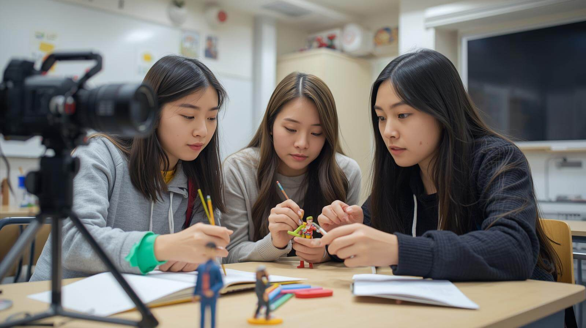

In class this past week, we explored stop motion technology. This was a very fun adventure into creative storytelling using digital tools. In this activity we were given little instruction and instead were provided with the learning resources. It was a great reminder that project-based and self-directed learning is a great way to learn. In fact, it is my preferred way to learn things.
Minimal Instruction
The instructor gave us some great resources, but they also ensured that we were using relatively simple software. There were a few moments when we wondered how to export something, or “what does this button do?” However, collectively, we were able to solve those issues quickly. Although the cloud-based software was easy to use and accessible, over half of our project was deleted during the export process. While this was unfortunate, the learning was still fun.
The lack of details and instruction forced our group to rely on each other’s skills and knowledge to experiment and problem-solve together. We looked up documentation and use AI prompts to help us when we were stuck. We knew the question that we needed to answer, so this made finding the answer quick and easy. However, we only had to do this a couple of times. Mostly, we relied on each other for answers. This immediate application of problem-solving and critical thinking is far better than following a strict guide. We had an idea of what we wanted to accomplish, then we set out to find the answers. This made for a very rich and memorable learning experience.
The Most Difficult Part
For me, the most challenging part was getting our clay figures to move in a realistic way, especially for scenes where they interacted together. We had to plan our scenes around our figures not jumping or flying because we did not have the means necessary to suspend them in the air.

Our figures were quite fragile, and this required a lot of patience and reforming of our figures. This made me realize that if we are going to make this kind of activity inclusive for our students, we need to make sure that we have the right support in place for these fine motor activities.
Using Claymation in My Own Classroom
For myself, my teachable subjects are English and Business. I see this activity being very useful for:
- English/Drama: As my own high school experience taught me (reenacting a scene from Hamlet with LEGO), stop motion is an engaging way for students to tell a story or reenact a scene from a book or play. It transforms passive reading into active interpretation of the text. Students can focus on an important scene, setting, tone, and more. They can bring the scene to life, like a movie!
- 21st Century Skills: Beyond subject domains, activities like this are a powerful way to teach essential skills: group collaboration, problem-solving, troubleshooting, creative ideation, and persistence. Bringing a creative component into the classroom deepens memory of the lesson and actively engages students in critical thinking.
Looking Ahead
This was a fun activity that has furthered my understanding of the learning potential it has. I will likely use this in the future to get students to re-enact a scene from a book. This is a great “maker space” activity that turns students into creators, and not just consumers, of digital media. I won’t be afraid to leave out some instructions. The learning that students have to do if they will solve those problems on their own, is often the most memorable.